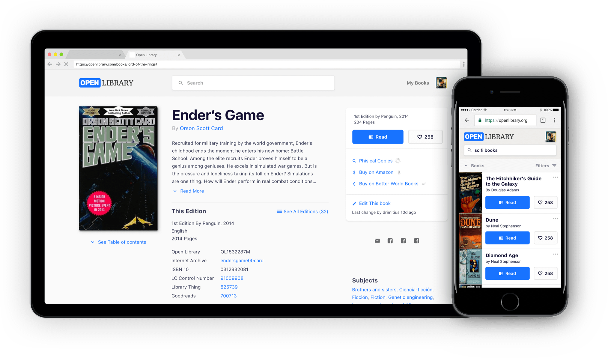

Redesign to make Open Source Library "Open Library" responsive and adapted to better visual design and UX standards
Open Library

Open Source Digital Library
Design - 2017
Redesign to make Open Source Library "Open Library" responsive and adapted to better visual design and UX standards